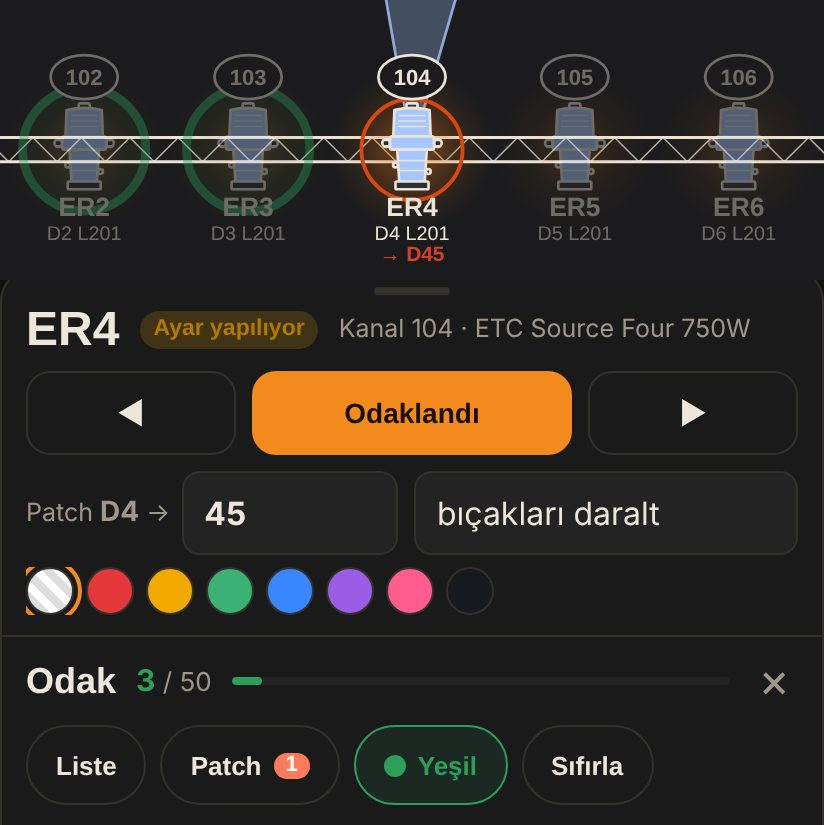
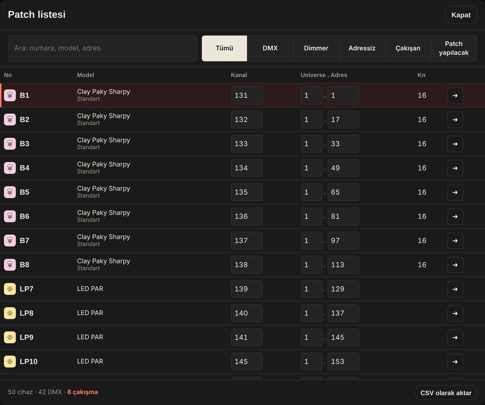
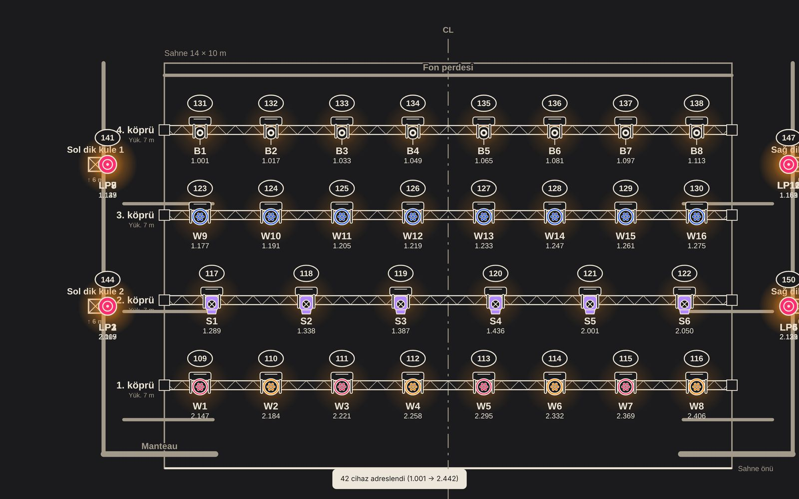
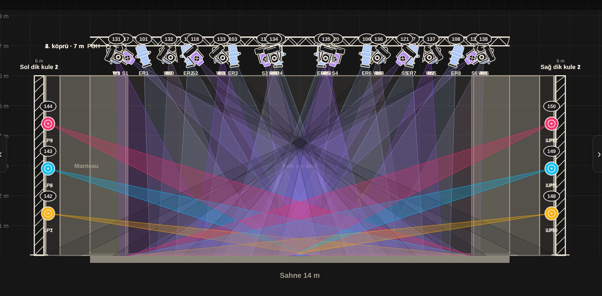
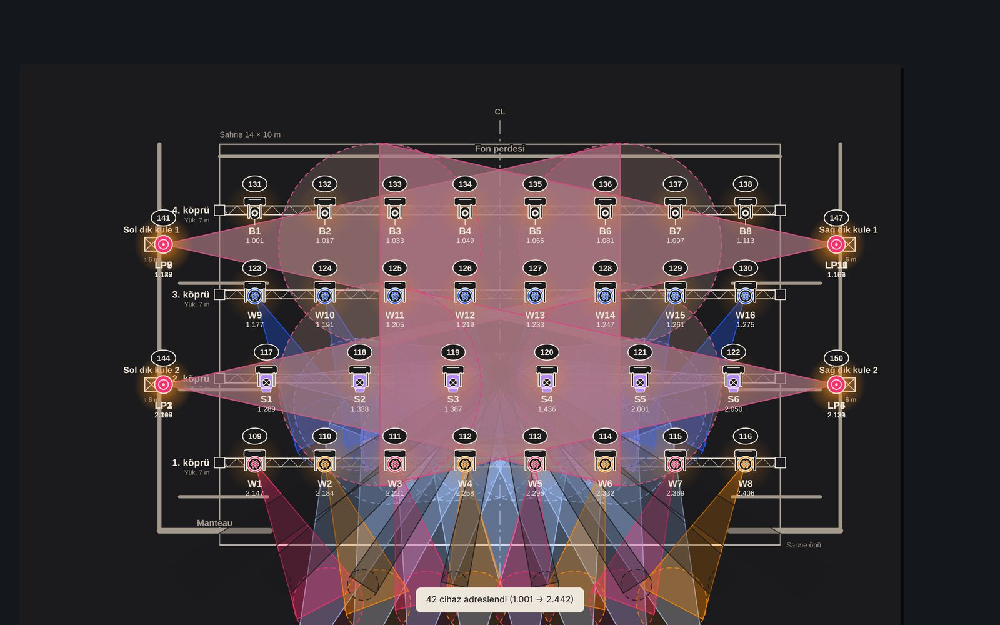

LampOff 7.11.0
İndirme ve kurulum
LampOff ücretsizdir. Tüm platformlarda aynı proje dosyası kullanılır; bir cihazda hazırlanan plan diğerinde açılır.
Android
LampOff, Android telefon ve tabletler için Google Play üzerinden dağıtılır.
- Gereksinim
- Android 6.0 ve üzeri
- Dağıtım
- Google Play
- İnternet
- Yalnızca çevrimiçi kütüphane için
Google Play sürümü yayımlanana kadar web uygulaması aynı özelliklerle telefonda kullanılabilir.

iPhone ve iPad
iPhone ve iPad’de LampOff, Safari üzerinden ana ekrana eklenen web uygulaması olarak çalışır; uygulama simgesiyle tam ekran açılır.
- Gereksinim
- Güncel iOS ve iPadOS, Safari
- Kurulum
- Safari › Paylaş › Ana Ekrana Ekle
- Çevrimdışı
- İlk açılıştan sonra internetsiz çalışır
Projeler cihazın kendi hafızasında saklanır; yedek için .json dosyası olarak dışa aktarılabilir.

Windows
Windows uygulaması geniş ekranda çalışma, Art-Net ve sACN ile canlı konsol bağlantısı ve test konsolu içerir.
- Gereksinim
- Windows 10 ve 11, 64 bit
- Kurulum
- LampOff-Setup .exe; kurulum klasörü seçilebilir
- Güncelleme
- Yeni sürüm uygulama içinden bildirilir
Kurulum dosyası GitHub sürüm sayfasından indirilir.

macOS
macOS uygulaması Windows sürümüyle aynı özelliklere sahiptir: geniş ekran, Art-Net ve sACN, test konsolu.
- Gereksinim
- macOS 12 ve üzeri
- Kurulum
- LampOff .dmg; Uygulamalar klasörüne sürüklenir
- İlk açılış
- Güvenlik uyarısında Finder › sağ tık › Aç
Kurulum dosyası GitHub sürüm sayfasından indirilir.

Web
Web uygulaması kurulum gerektirmez; güncel tarayıcılarda açılır ve ilk açılıştan sonra internet bağlantısı olmadan da çalışır.
- Tarayıcılar
- Chrome, Edge, Safari, Firefox
- Kurulum
- Gerekmez; istenirse ana ekrana eklenir
- Veri
- Tarayıcının kendi hafızasında saklanır
Aynı adres telefonda, tablette ve bilgisayarda kullanılabilir.
